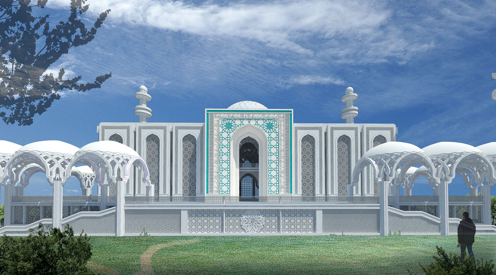
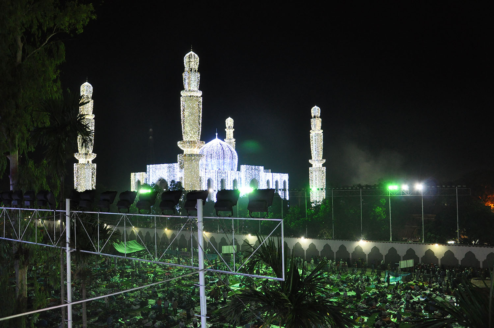
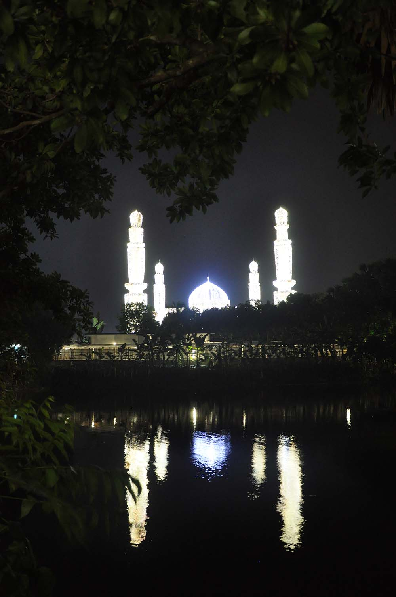
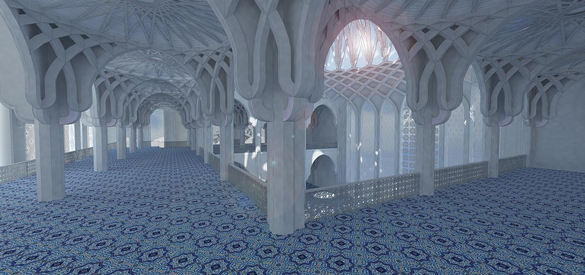
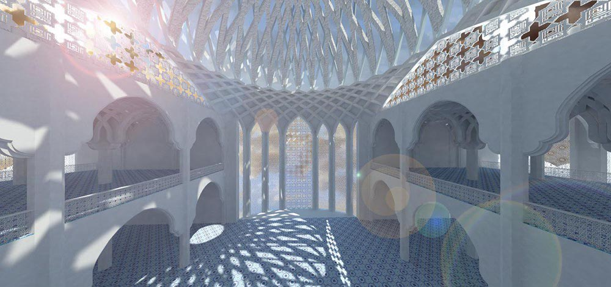
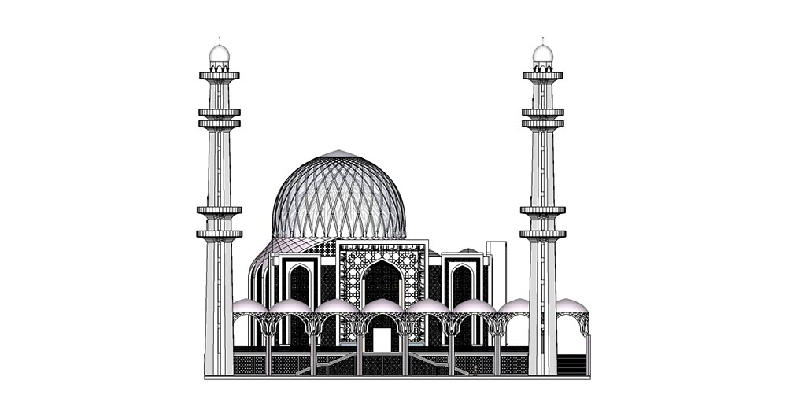
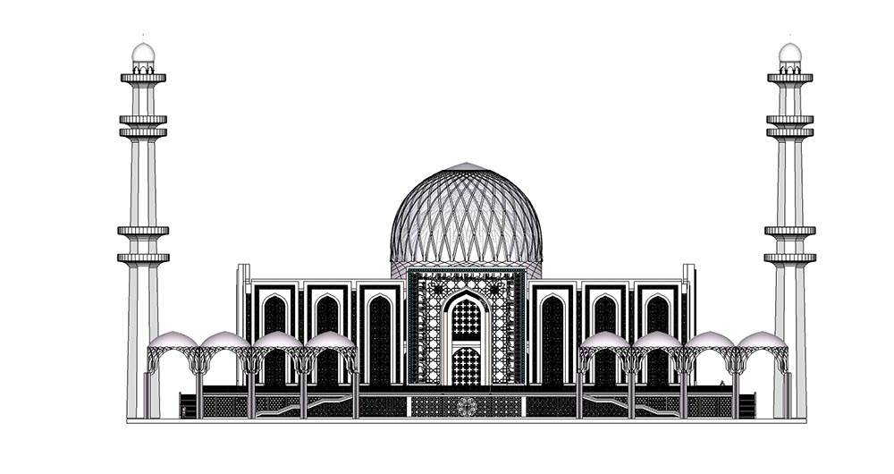

Concept Design
Amphitheater
170000m2
N/A
The Bishwa Zakir Manzil congregational mosque is located next to the tomb of a great Sufi Atrushi Pir, with fifty million followers around the world, in Faridpour, Bangladesh. Being one of the most influential Islamic scholars and Sufis of the modern era in Bangladesh and housing an average of five million pilgrims on special occasions throughout the year, the design of this mosque was both significant and sensitive. This project attempts to restore the existing unfinished structure and turn it into a welcoming and flourishing mosque for the pilgrims considering the characteristics of the Islamic religious spaces, subcontinental identity and sustainable architecture. In addition to climatic issues in the subcontinent, such as high levels of humidity which led to the perforated façade design, efforts were made to vividly increase the presence of natural sunlight in the interior spaces. The complex geometric structural design also allowed for the creation of a glamourous sensation without needing to add decorative elements within the Mosque






